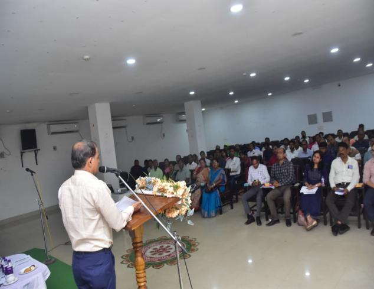
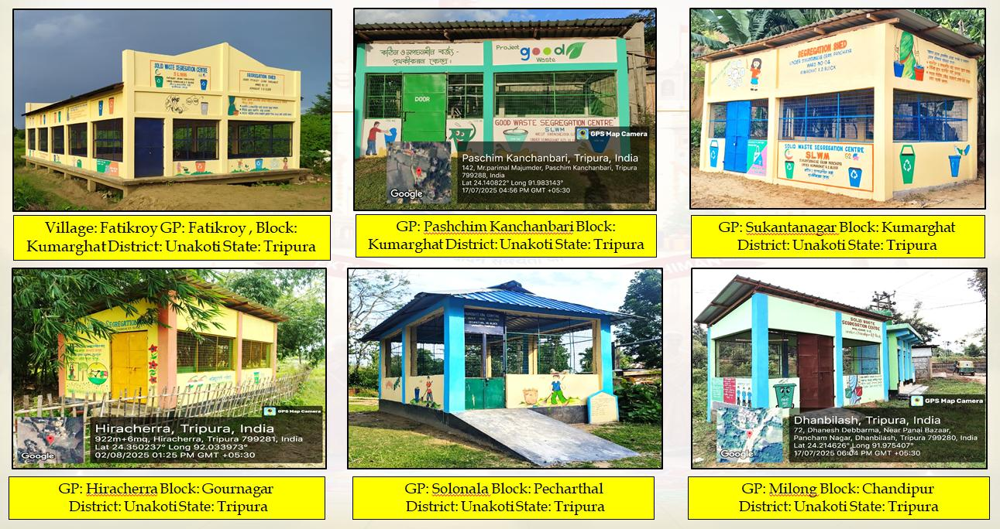
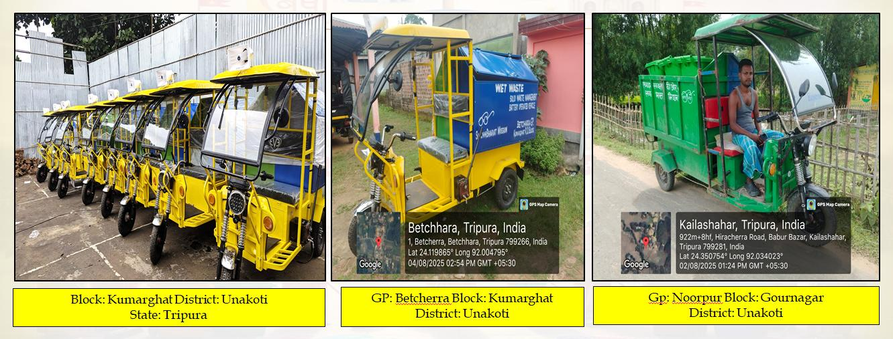
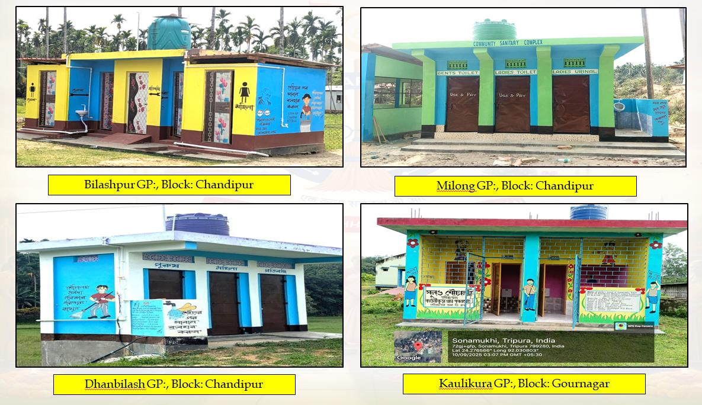
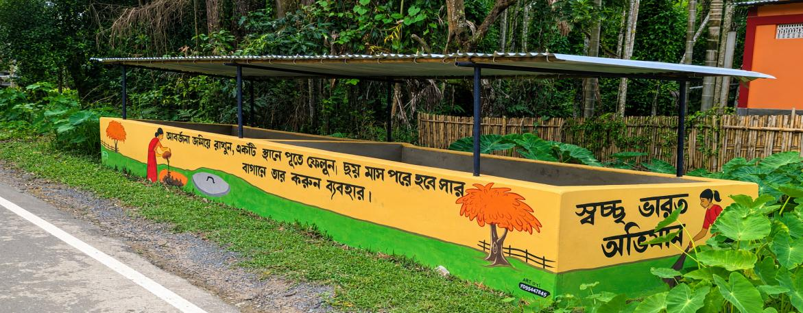
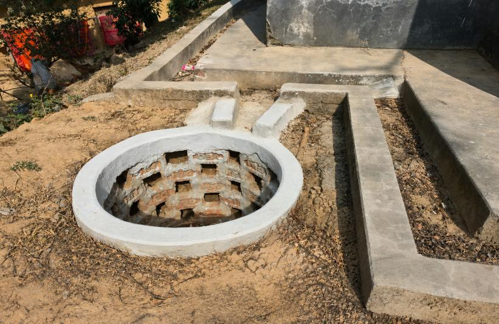

About us
Swachh Bharat Mission (Grameen) – Unakoti District is a dedicated platform providing updated information on the implementation of SBM-G activities across the district. The page highlights progress in solid and liquid waste management, legacy waste remediation, four-way source segregation, plastic waste management, Segregation Shed GOBARDHAN projects, Plastic waste Management Unit, Community Sanitary Complexes (CSCs), IEC activities, and other sanitation initiatives. It also includes photographs, progress reports, achievements, and important circulars to ensure transparency and public awareness. Moreover, Implementation and progress with provisions for uploading of photographs related to Legacy waste and Solid waste (Generation/Regeneration/Degeneration).

❖ Meeting Cum Workshop regarding implementation of Solid waste Management Rules2026 at Kalakshetra Hall , Kailashahar and Kumarghat Panchayat Samity Hall on 13.05.2026.
A workshop-cum-meeting on the implementation of the Solid Waste Management Rules 2026 was conducted on 13.05.2026 under the chairmanship of the District Magistrate & Collector, Unakoti District. The programme was held at Kalakshetra Hall, Kailashahar, at 11:00 AM by involving with Gournagar and Chandipur Block and in coordination with the CEO Kailashahar subsequently at the Kumarghat Panchayat Samiti Hall at 3:00 PM by involving with Kumarghat and Pecharthal Block on the same day and in coordination with the CEOs of Kumarghat. The meeting was attended by the Additional District Magistrate, all BDOs, SDMs, Member Secretary DWSMC, and Panchayat Secretaries of the respective Gram Panchayats to review implementation strategies and ensure effective enforcement of the Solid Waste Management Rules2026 across the district.
❖ Identification of authorized & Unauthorized Dump yard under Unakoti District.:-
The State Pollution Control Board, Tripura, identified both authorized and unauthorized dump yards in Unakoti District and shared the details with the district administration from time to time. Based on these reports, necessary instructions were issued to all Chief Executive Officers (CEOs) and Block Development Officers (BDOs) to take appropriate action, including the removal of unauthorized dumping sites, scientific management of solid waste, and compliance with the Solid Waste Management Rules, 2026.
❖ Awareness campaign conducted for implementation of Solid waste Management Rule 2026:-
Time to time awareness campaign on the implementation of the Solid Waste Management Rules, 2026 was conducted with the active participation of PRI members and school students. The campaign focused on promoting waste segregation at source, proper collection and disposal of solid waste, cleanliness, and environmental protection. Through awareness meetings, rallies, and community interactions, participants encouraged the public to adopt responsible waste management practices and maintain a clean and healthy environment. The campaign also emphasized the importance of community participation in achieving sustainable solid waste management.
❖ Plastic Free initiative taken by the Unakoti District on 18.12.2025
The Plastic Free Unakoti Event has been launched across the entire Unakoti District on December 18th, 2025. The event was graced by esteemed dignitaries including the Mission Director, SBM (G), District Magistrate Unakoti, Director Water and Sanitation Support Organization (WSSO), State Project Management Unit (SPMU) Team, Additional District Magistrate Unakoti, Zilla Sabhadipati, all BDOs & other Officials Unakoti. On that occasion, 50,000 numbers of Eco-Friendly Bin have been installed at different strategic location across the district. The launch aims to initiate comprehensive efforts towards eliminating plastic waste and promoting sustainable practices in Unakoti. The event will feature awareness drives, rallies, and activities to encourage community participation and ownership.
❖ SBM(G) Assets play important Rule for Solid Waste Management: -
Plastic Waste Management Unit and its importance: -
There exists 4 (four) Nos of PWMUs covering with all Blocks under Unakoti District. The Plastic Waste Management Units (PWMUs) in Unakoti District, Tripura, plays a vital role in scientific plastic waste management under the Swachh Bharat Mission (Grameen). It collects plastic waste from villages, markets, and institutions, segregates it by type, cleans, shreds, bales, and stores it before sending it to authorized recyclers or end users. The unit also conducts awareness campaigns to promote source segregation and reduce plastic littering. Its key advantages include cleaner villages, reduced environmental pollution, prevention of open burning and illegal dumping, increased recycling, resource recovery, employment generation, and support for achieving a sustainable, plastic-free, and environment.
Segregation Shed and its importance: -
There exist 92 nos. of Segregation Shed within Unakoti District. Each GP/VC-wise Segregation Shed in Unakoti District serves as a collection and sorting centre for biodegradable, non-biodegradable, and recyclable waste. It promotes source segregation, scientific waste management, composting, and recycling. The sheds help reduce open dumping, improve village cleanliness, protect the environment, and support sustainable waste management under SBM-G.

Vehicles and its importance : -
Under SBM-G in Unakoti District, each GP/VC uses battery-operated waste collection vehicles for door to-door collection and transportation of segregated waste to the segregation shed. These eco-friendly vehicles reduce pollution, improve collection efficiency, promote source segregation, ensure cleaner villages, lower fuel costs, and support sustainable solid waste management.

❖ Community Sanitary complex (CSCs):-
Construction of Community Sanitary Complexes (CSCs) is an important component of Swachh Bharat Mission (Gramin) to ensure access to safe, hygienic, and inclusive sanitation facilities in public places. CSCs cater to households lacking individual toilets and serve markets, community gathering areas, and other public locations. They help eliminate open defecation, improve public health and hygiene, and support the sustainability of ODF Plus initiatives through proper operation, maintenance, and community participation.

❖ Community Compost Pits:-
The construction of community compost pits under SBM-G in Unakoti District plays a vital role in scientific solid waste management. It facilitates the safe disposal and composting of biodegradable waste, reduces open dumping and environmental pollution, and helps maintain clean villages. The compost produced can be used as organic manure for agriculture and horticulture, promoting sustainable farming. Community compost pits also encourage public participation, improve sanitation, reduce greenhouse gas emissions, and support the objectives of the Solid Waste Management Rules, 2026 and the Swachh Bharat Mission–Gramin.

Construction of Community Soak pits:-
The construction of community soak pits in Unakoti District plays a significant role in improving groundwater recharge and sustainable water management. Soak pits are simple structures designed to collect and slowly percolate wastewater and rainwater into the soil, allowing natural filtration and replenishment of underground aquifers. In a region like Unakoti, which experiences seasonal rainfall and water scarcity during dry periods, soak pits help retain rainwater locally and reduce surface runoff and soil erosion. They also prevent waterlogging and improve village sanitation by safely disposing of greywater from households and community spaces. By enhancing infiltration, soak pits contribute to the restoration of declining groundwater levels, ensuring better availability of water for drinking, irrigation, and domestic use. Community participation in constructing and maintaining soak pits under rural development programmes promotes awareness about water conservation and sustainable practices. These structures are low-cost, eco friendly, and highly effective in strengthening climate resilience and supporting long-term water security in the district.

District Photo Gallery - All SBM(G) Initiatives
Browse through photos of Swachh Bharat Mission (Grameen) initiatives, assets, workshops, awareness drives, and plastic-free events in Unakoti District. Click on any image to open the Full-Screen Viewer with Left/Right Arrow Navigation.